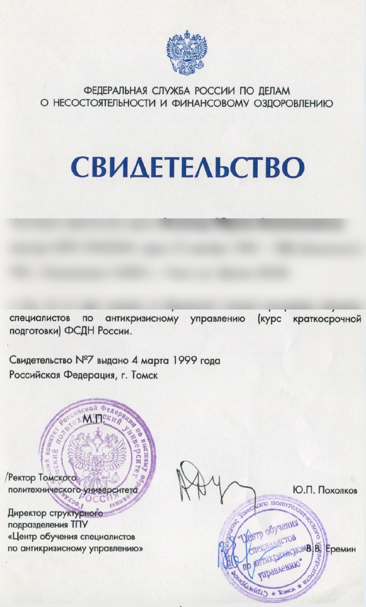
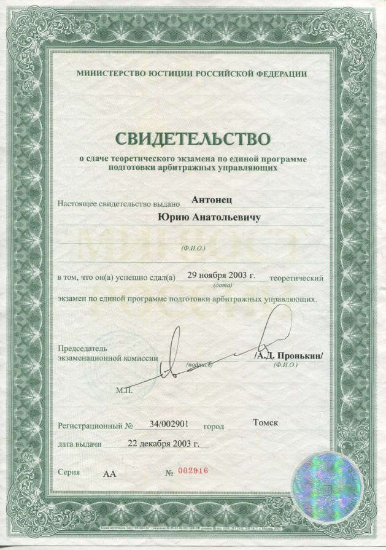
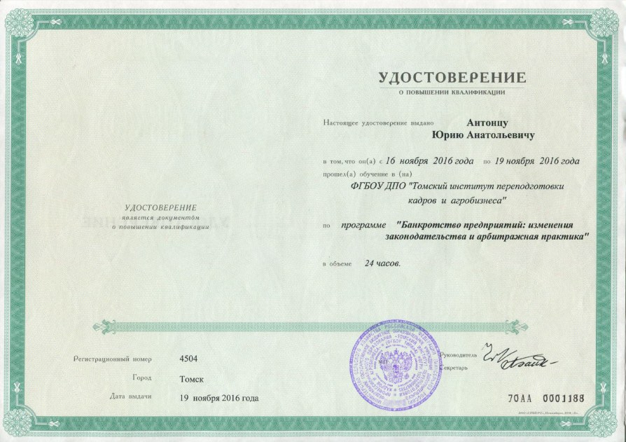

Обо мне
Антонец Юрий Анатольевич — арбитражный управляющий из Томска
- На первой встрече смотрю документы и говорю, подходит ли вам банкротство. Если нет — объясняю почему и что можно сделать вместо него
- Сразу называю полную стоимость: гонорар и обязательные расходы (депозит управляющему, публикации)
- Веду дело сам: документы, суд, переписка с кредиторами
25+ летв банкротстве
250+процедур
320+ млн ₽списанных долгов

Офис в Томскеприём по предварительной записи
Документы и квалификация
Нажмите, чтобы открыть скан

1999
Свидетельство ФСДН России № 7

2003
Свидетельство Минюста РФ, серия АА № 002916

2016
Повышение квалификации № 70АА 0001188

2018
Свидетельство ООО «Декстер»